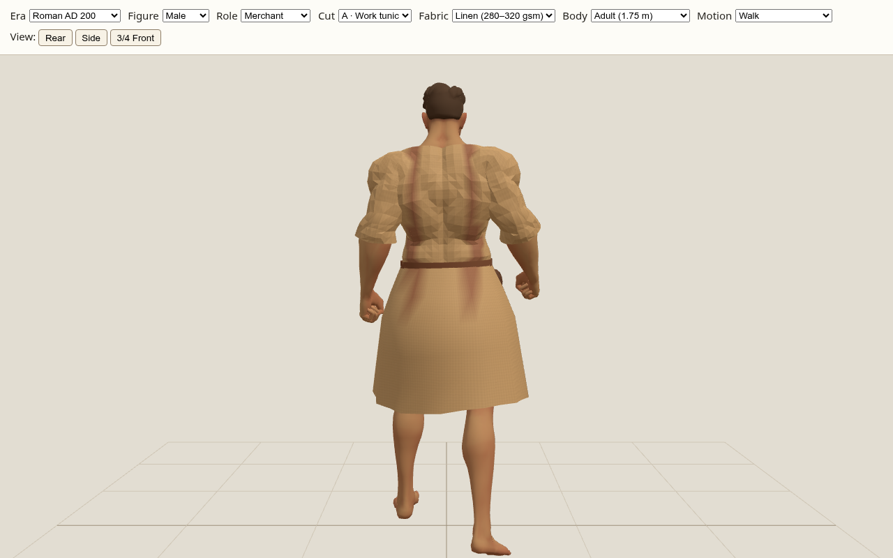
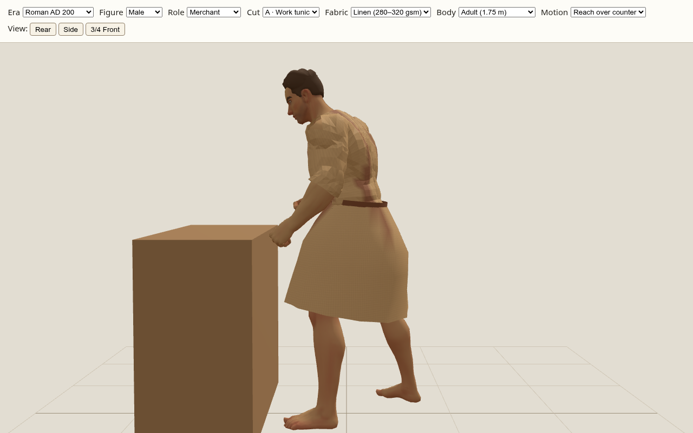
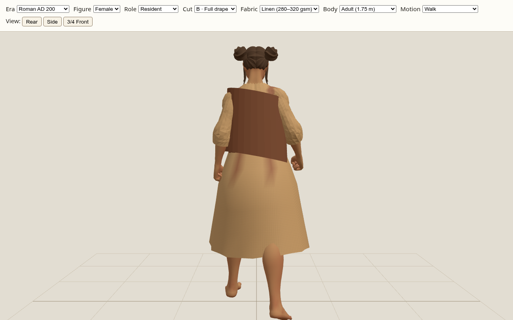
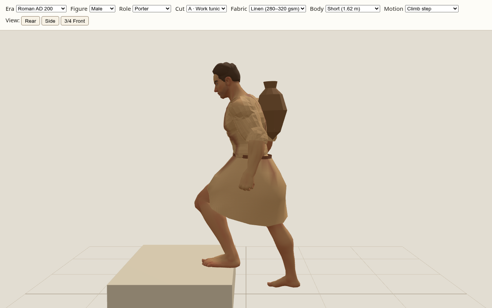
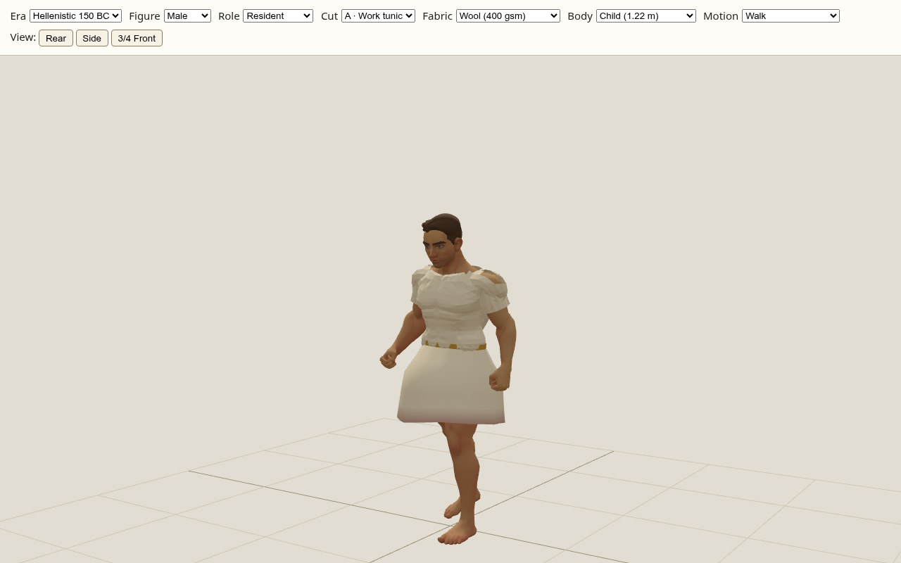
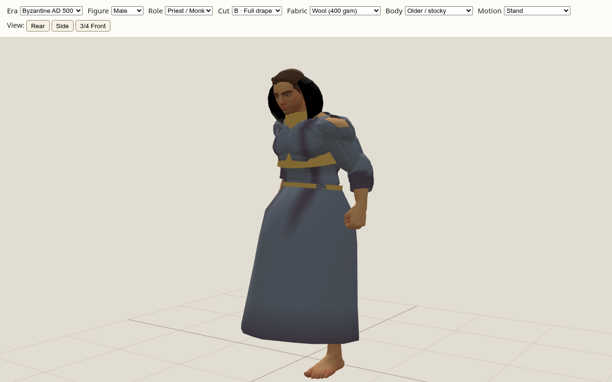

Inspect the animated tunic fitting in the development server · Open the Stitch concept board
Rear silhouette studies at equal height. The proposed waist follows the torso. Extra fabric opens below the belt so the wearer can bend. Vertical lines indicate fold placement.
Recommended first fit: A for the working merchant and porter. Test B on the resident. For the soldier, fit the equipment belt independently and inspect the arch silhouette while on watch. Repeat the merchant pose on short, tall, older adults, adolescents, and children.
Captured directly from fitting.html using the actual rigged citizen meshes (Cut A work tunic, Cut B full linen, linen vs. wool weave, rear ease, merchant reaching over counter, porter step-climb IK, Hellenistic child, and Byzantine priest):






The street builder uses a 14 m carriageway (with central cloaca slabs, curb storm gutters, and 1.42 m wheel-rut tracks) and 6 m porticoes with timber-framed taberna doorways and open shutters; adjacent street sections keep intersecting porticoes clear across bends. Frontinus Gate steps three travertine threshold courses across ±5.4 m with swung-open bronze-strapped leaves so all three 3.5 m arches pass bidirectionally. The latrine builder (40 × 10 m authored; 20–24 × 6–9 m mapped/published) splits its front keyhole bench and euripus water channel around the 2.6 m vestibule with open wooden privacy doors and clerestory windows, verified in both directions. Draught carts use 1.10 m iron-rimmed wheels at 1.42 m gauge and angled ash shafts meeting the horse breast-collar harness and dorsal tug loops 2.6 m ahead.
Dimensions below pair authored reconstruction parameters with surveyed OpenStreetMap / MAIER archaeological evidence and era-gated interior accessibility.
| No. | Landmark | Authored reconstruction | Surveyed & catalog evidence | Reference |
|---|---|---|---|---|
| 1 | Travertine Terraces | 60 cascading calcite basins (Water builder, built −200) | Formation ~2.7 km × 600 m × 160 m; OSM terrace zone 1,374 × 673 m; 17 hot springs (35–100 °C) | UNESCO 485 |
| 2 | Frontinus Gate | 3 × 3.5×7 m arches, Ø8×11 m towers, ±5.4 m stepped thresholds, open doors | Flavian AD 84–86 (Domitian / Frontinus); OSM gate body ~15 × 3 m, ~25–30 m with towers | Wikipedia |
| 3 | Frontinus Street (Plateia) | 14 m carriageway, central cloaca, 1.42 m ruts, 6 m porticoes & tabernae | ~1,205 m straight run to South Gate (~13.5–14 m wide carriageway) | Wikipedia |
| 4 | Northern Necropolis | Instanced tumuli, acroteria sarcophagi & walkable 4×6 m house tombs | ~1,200 tombs over 2 km; OSM northern polygon ~678 × 241 m (150 BC – AD 600) | Wikipedia |
| 5 | Public Latrine | 40 × 10 m, back: 6, split keyhole benches, euripus water channel, doors & clerestory | Late 1st c. AD; two internal Doric column rows; OSM ~24 × 9 m / published ~20 × 6 m | TAN |
| 6 | North Agora | width: 134, length: 230, west/north propylaea, 2-storey east Stoa-Basilica | Published 280 × 170 m (OSM ~265 × 144 m); Hadrianic–Antonine east basilica on stepped podium | Wikipedia |
| 7 | North Byzantine Gate | 20×8 m curtain, 4×6 m arch, 6×11 m square towers, spolia & open iron-bound doors | Theodosian circuit c. AD 400; OSM passage ~13 × 2 m with flanking square towers | Wikipedia |
| 8 | Nymphaeum of the Tritons | 60×12 m 2-storey U-facade, back: 23, 10 m basin, 9 water jets & Triton reliefs | Severus Alexander (AD 222–235); ~60 m facade (OSM ~62 × 7 m) facing Frontinus Street | TAN |
| 9 | Great Baths | width: 55, depth: 100, 3 interconnected vaulted halls, lunette windows & plunge pool | 2nd c. AD; OSM ~110 × 55 m with 36 × 52 m palaestra; Archaeology Museum since 1984 | Wikipedia |
| 10 | Cathedral | width: 25, length: 49 (built AD 500), templon screen, synthronon & polycandela | Early 6th c. three-aisled basilica with east apse; OSM ~49 × 25 m | Wikipedia |
| 11 | Antique (Sacred) Pool | 30 × 22 m thermal spring (built −200); upright portico AD 80–619, toppled AD 620+ | ~36 °C CaCO₃/CO₂ spring (OSM ~54 × 27 m); portico toppled by 7th-century earthquake | Wikipedia |
| 12 | Temple of Apollo | width: 18, length: 26, columnHeight: 9; Hellenistic (−180) & Roman (AD 190) phases | OSM ~24 × 18 m temple within ~60 × 60 m sanctuary; 3rd c. AD rebuild on Hellenistic podium | Wikipedia |
| 13 | Ploutonion — Gate to Hell | width: 9, length: 13, columnHeight: 5, frontColumns: 4, podiumHeight: 1.5, grotto: true | OSM ~54 × 42 m enclosure; chthonic CO₂ grotto & viewing steps rediscovered by F. D’Andria (2013) | Wikipedia |
| 14 | Theatre | outerRadius: 51.5 (103 m), orchestraRadius: 10.8, rows: 50, aligned 3-portal scaena | ATA: 103 m cavea, 21.65 m orchestra, 23 + 27 rows, Severan 3-storey scaenae frons | ATA |
| 15 | Martyrium of St Philip | 60 m pilgrim square, 20 m central octagon, processional stairs & ciborium canopy | Early 5th c. AD; 20 m octagonal shrine inside ~65–71 m square complex | Wikipedia |
| 16 | Church & Tomb of St Philip | width: 20, length: 32, tombChamber: true (includes 3.5 × 4 m Roman saddle-roof tomb) | OSM ~31 × 20 m three-aisled church built around 1st c. Roman tomb (D’Andria 2011) | Wikipedia |
| 17 | South Byzantine Gate | 20×8 m curtain, 4×6 m arch, twin 6×11 m square towers & stepped thresholds | Late 4th c. AD gate (OSM ~13 × 2 m) closing the 1.2 km Plateia | Wikipedia |